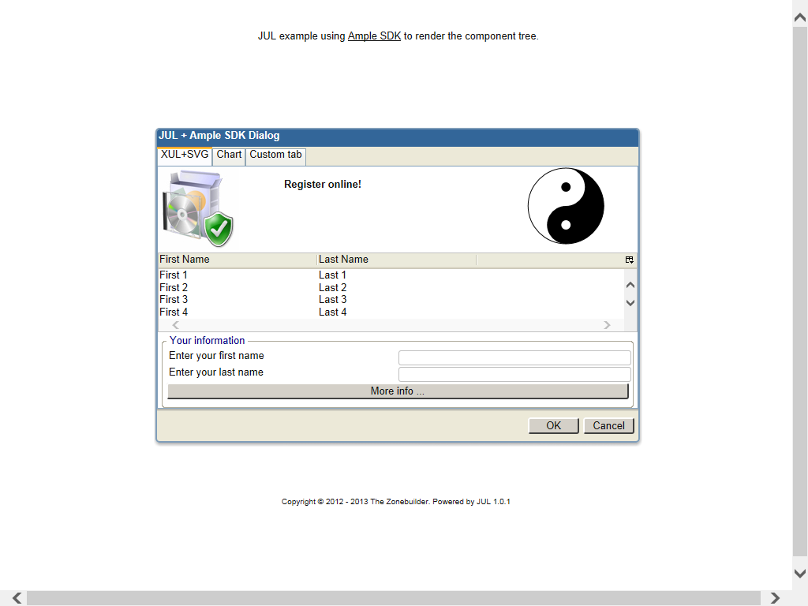
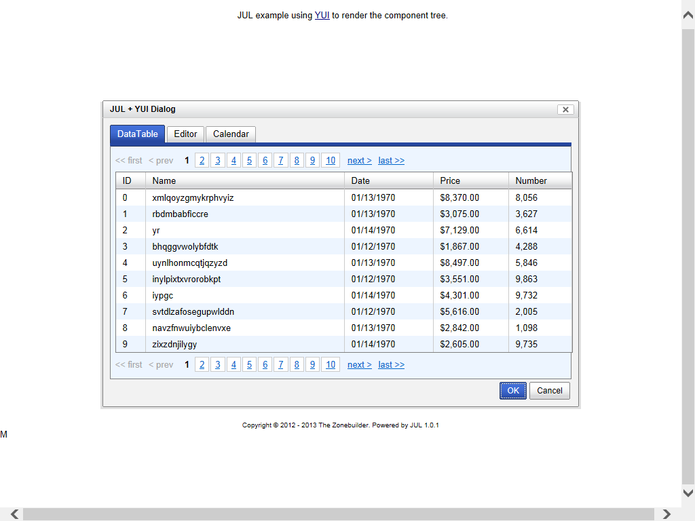
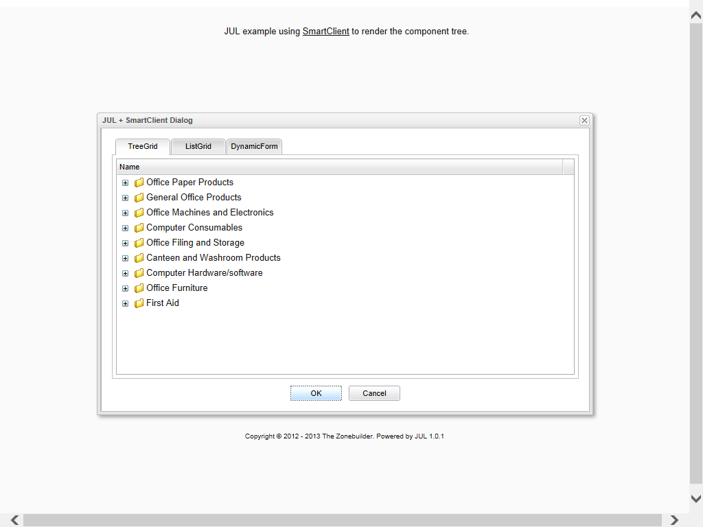
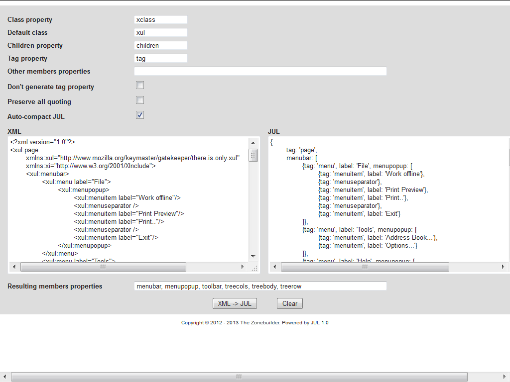

About
The JavaScript UI Language (JUL) is a configuration and instantiation module for the JavaScript frameworks. It can be used with any framework that accepts a configuration object as a constructor parameter, or with a custom factory for the other frameworks.
JUL parses a tree of configuration objects, and creates the runtime components in the expected order and membership. For the most uses, after this step, you will have your application's user interface up and running.
Features
- implements programming by configuration for event-driven UI JavaScript frameworks
- top-down and bottom-up creation of the component tree
- converts a DOM XML document into a configuration tree
- supports configuration inheritance and parser meta-information inside a configuration node
- fully configurable parsing and ability to map node IDs as component instances
- serialization of the configuration tree to JavaScript or JSON source code
Sample code
This is how JUL looks. For complete examples, please consult the Examples section.
| Framework sample code | DOM sample code |
var oUiConfig = {
xclass: 'FWK.Widgets.DataView',
id: 'APP.mainView',
autoDraw: false,
overflow: 'hidden',
children: [{
xclass: 'FWK.Widgets.VLayout',
id:'VLayout0',
children: [{
xclass: 'FWK.Widgets.ToolStrip',
id: 'ToolStrip0',
visibilityMode: 'multiple'
}, {
xclass: 'FWK.Widgets.HLayout',
id: 'HLayout0',
children: [{
xclass: 'FWK.Widgets.VLayout',
id: 'Navigation',
width: 200,
showResizeBar: true
}, {
xclass: 'FWK.Widgets.TabSet',
id: 'TabSet1',
tabs: [{
xclass: 'FWK.Widgets.Tab',
title: 'Tab1',
id: 'Tab1'
}, {
xclass: 'FWK.Widgets.Tab',
title: 'Tab2',
id: 'Tab2'
}],
showTabScroller:true,
showTabPicker:true,
destroyPanes:false,
showEdges:false
}]
}]
}],
width: '100%',
height: '100%'
};
var oParser = new JUL.UI.Parser({
classProperty: 'xclass',
childrenProperty: 'children',
membersProperties: ['tabs'],
idProperty: 'id'
});
oParser.create(oUiConfig);
APP.mainView.render();
|
var oUiConfig = {
tag: 'dialog',
id: 'dialog-browse',
title: 'Open',
width: 500,
height: 250,
hidden: true,
children: [
{tag: 'listbox', id: 'listbox-browse', selType: 'single',
flex: 1, children: [
{tag: 'listhead', children: [
{tag: 'listheader', label: 'Name', width: 300}
]},
{tag: 'listbody', children: [
{tag: 'listitem', children: [
{tag: 'listcell', label: 'File 1'}
]},
{tag: 'listitem', children: [
{tag: 'listcell', label: 'File 2'}
]}
]}
]}
],
};
var oParser = new JUL.UI.Parser({
defaultClass: 'xul',
useTags: true,
tagProperty: 'tag',
customFactory: 'JUL.UI.createDom',
topDown: true
});
var oDialog = oParser.create(oUiConfig);
oDialog.show();
|
Examples
Below are examples for using JUL. Just click the picture to run, and then select View page source in your browser to see the commented code.
| JUL + Ample SDK Example | JUL + YUI Example |
|  |  |
| JUL + SmartClient Example | XML2JUL |
|  |  |
Resources
Support
Please feel free to support the activities of project development, documenting, bug-fixing,
forum posting, and blogging on JUL.
Your contribution will translate into positive action.